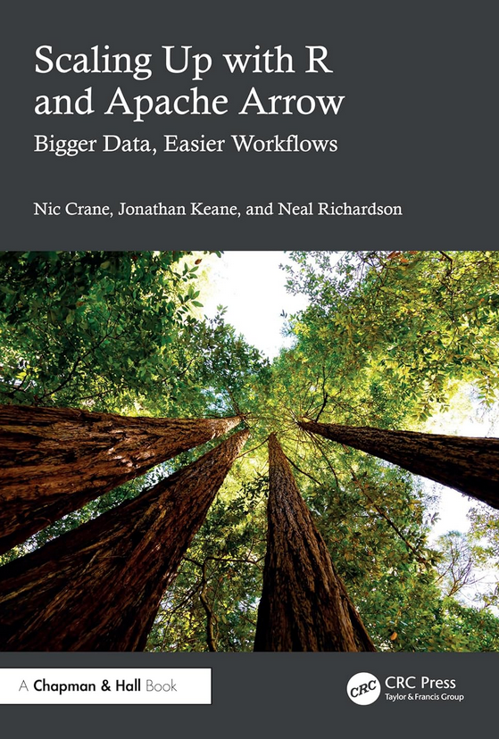
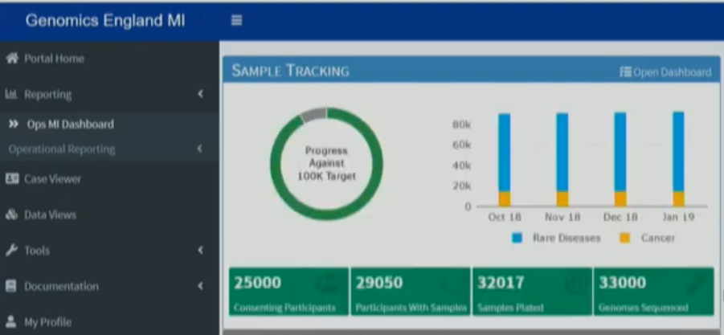
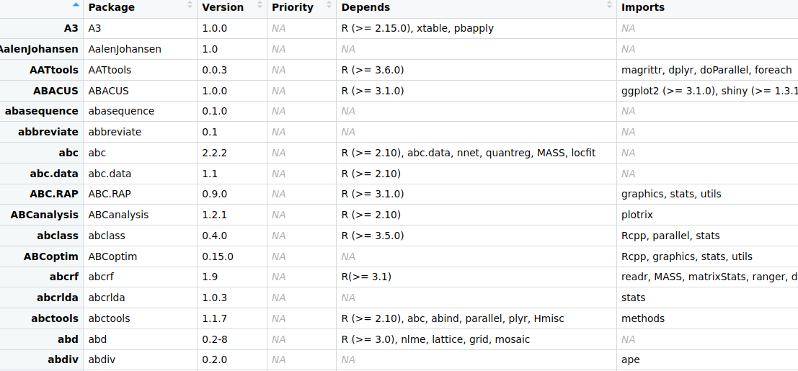
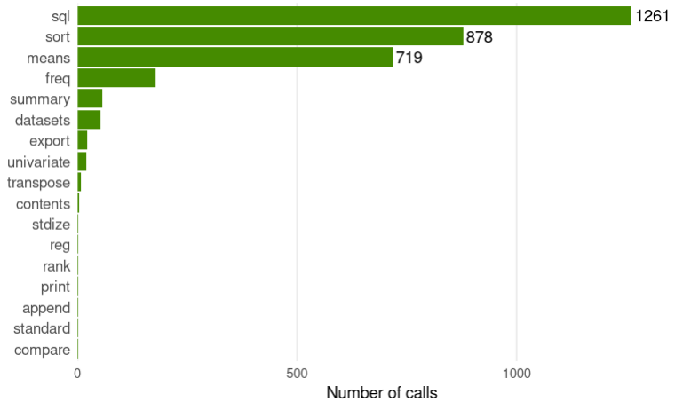

Selected Work
Examples of how I’ve applied R, Shiny, and software engineering across internal tools, public-sector systems, and open-source projects.
Open Source Contribution – Apache Arrow Project
Type: Open Source Development & Authoring

I’ve been an active contributor to the Apache Arrow R package, where I’ve worked on implementing features, acting as package maintainer, and extending dplyr support to Arrow. This work has influenced how I approach performance, reproducibility, and maintainability - both in open source and in client projects.
During this time I also taught and wrote about Arrow:
- Big Data in R with Arrow – workshop taught at Posit Conf (2023, 2024)
- Scaling up with R and Arrow – co-authored book on large-scale data workflows in R, due out in 2025
Supporting Genomic Medicine in the NHS with R and Shiny
Type: Client Project (Team Build)

I contributed to a modular Shiny application used in the national rollout of genomic testing within the NHS, building on the 100,000 Genomes Project. It let operational staff, lab teams, and programme managers track genomic samples and view key metrics without needing to interact directly with backend systems.
What I worked on:
- UI and server logic across multiple Shiny sub-apps
- Integration with APIs and SQL databases
- Interactive visualisations using plotly, visNetwork, sunburstR and other htmlwidget packages - Profiling, refactoring, and scaling reactive code for performance
The app was built to support a national rollout and continues to be used across NHS teams.
Watch the talk →
Refactoring a Legacy Shiny App for Maintainability
Type: Internal Tooling (Team Lead)

While at Novartis, I led a small team responsible for maintaining an internal Shiny app used to manage R package installation requests. The codebase had become increasingly fragile and hard to maintain, with tightly coupled logic and growing technical debt.
What I worked on:
- Refactored reactive logic to simplify control flow and heavily modularised code to support maintainability
- Introduced testing strategies and CI workflows
- Improved onboarding for new developers by making the codebase easier to understand
The changes made the application significantly more maintainable and safer to extend as the team evolved.
Scoping a Large-Scale SAS to R Migration
Type: Consulting – Code Audit & Planning

As part of a consultancy engagement, I audited a large SAS codebase to help a client understand the feasibility and risk profile of migrating to R. The codebase was business-critical and had grown organically over many years.
What I worked on:
- Static code analysis of SAS codebase to estimate size and complexity (e.g. SQL-style vs. custom PROC logic)
- Identified areas where statistical methods or parameter defaults might behave differently in R
- Delivered a scoped migration plan to help inform budget, risk, and staffing decisions
The audit helped the client avoid assumptions about direct conversion and provided a structured way to evaluate next steps.